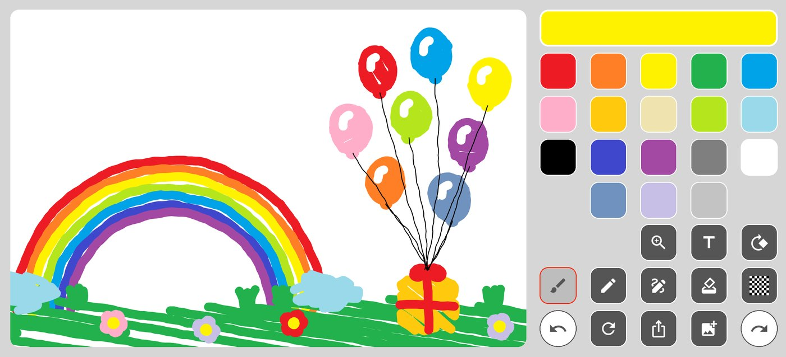

Cuatro herramientas
Pincel, lápiz, marcador y borrador, cada uno con su propio grosor y borde; no un control deslizante que finge ser cuatro.
Sin cuenta. Sin tutorial. Sin suscripción. Dieciocho colores y cuatro herramientas, fijos: no hay nada que elegir antes del primer trazo ni nada que estorbe después.

La idea
Todas las aplicaciones de dibujo que probé querían algo de mí antes de dejarme trazar una línea. PaintBoard no pide nada. Esa restricción decidió cada función de abajo, incluidas las que quité.
Qué trae
Pincel, lápiz, marcador y borrador, cada uno con su propio grosor y borde; no un control deslizante que finge ser cuatro.
Una paleta fija. Sin rueda, sin campo hexadecimal, sin ninguna decisión antes del primer trazo.
Escribe donde quieras y luego muévelo, cámbialo de tamaño o gíralo. Vive dentro del dibujo, así que el borrador lo trata como tinta.
Carga una foto y dibuja encima. La foto nunca sale del dispositivo.
Pellizca para acercarte al detalle y gira el lienzo noventa grados cuando el dibujo lo pida.
Guárdalo en tus fotos o pásalo a cualquier otra aplicación.
La paleta
Vienen de la primera versión de 2017 y no han cambiado desde entonces. Elegir un color cuesta un toque, y cuesta ese mismo toque siempre.

De dónde viene
Escribí la primera versión en 2017 como aplicación nativa de iOS, por una razón: quería bosquejar algo rápido y todas las aplicaciones de mi teléfono me obligaban a configurar antes.
Este año la reescribí desde cero en Flutter, para que la mitad Android del mundo también la tuviera. La reescritura fue casi por completo un ejercicio de contención: la tentación de añadir capas, pinceles y una rueda de color es constante, y cada una de ellas habría costado justo aquello que la hace útil.
Sigue siendo una sola pantalla. Siguen siendo dieciocho colores.
También está PaintBoardPro en el App Store: una aplicación aparte con selector de color completo, no una versión de pago de esta. PaintBoard es deliberadamente la más sencilla de las dos, y sigue siendo gratuita.
Privacidad
No hay ningún servidor al que subirlos. Todo se procesa en el dispositivo y desaparece cuando borras la aplicación. La aplicación es gratuita y muestra anuncios, lo que significa que Google AdMob y Firebase Analytics recogen el identificador de publicidad y la información de dispositivo habituales, todo ello detallado en la política de privacidad.
Gratis en ambas tiendas. Funciona sin conexión, así que puedes instalarla ahora y usarla en el avión.